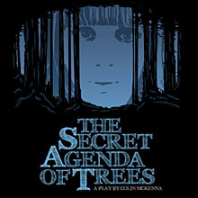

past performance
The Secret Agenda of Trees
A new play by Colin McKenna
To debut Off-Broadway
Previews begin March 15,
opens March 19
March 15 – April 11, 2009
At The Wild Project
THE SECRET AGENDA OF TREES
a new play by Colin McKenna will debut Off-Broadway with previews beginning Sunday, March 15 prior to its official press opening on Thursday, March 19 at The Wild Project (195 East 3rd Street) in Manhattan.
The play is directed by Michael Kimmel with a cast featuring Lillian Wright (“Parking Lot Lonely Heart”), Reyna de Courcy (“Esoterica”), Michael Tisdale (“The Private Lives of Eskimos” “Freulein Else”), Brian Reilly, and Christian Navarro.
THE SECRET AGENDA OF TREES is set in a rural community in the backwoods of America where escape and fantasy substitute for hope: a tattered bond holds together Veronica, a 13-year-old who survives on a dream-life filled with Rosemary Clooney and Veronica Lake, and her mother, who dulls the pain of work at a slaughterhouse with booze and meth. As Veronica develops a dubious crush on a tattooed boy from study hall, and her mother invites a mysterious stranger into their ramshackle home, the cycles of dependency become increasingly dangerous and holding the world at bay may prove impossible.
THE SECRET AGENDA OF TREES has scenic and lighting design by Ben Kato, and costume design by Jessica Gaffney. Elizabeth Nielsen is production manager.
THE SECRET AGENDA OF TREES was a finalist chosen by playwright Edward Albee when he served as judge for the first-ever Yale Drama Series in 2007. Prior to its Off-Broadway debut, the play was presented as part of the Cherry Lane Theatre’s Mentor Project (mentor, Lynn Nottage), and has received The Goldberg Prize, NTC’s Stavis Award and the John Golden Playwriting Award. Mr. McKenna’s play “any-body” was presented at the Actor’s Theatre of Louisville, and his play “Parking Lot Lonely Heart” was produced by Boomerang Theatre in NYC last fall, while other plays have been performed at Soho Rep and La MaMa ETC.
Director Michael Kimmel has helmed “Actors Are F%#$ing Stupid” by Ian Mcwethy, Len Jenkin’s “Kraken,” and Timothy Mansfield’s “January 1986,” as well as Peter Weiss’ “Marat/Sade” at Access Theater and the 60th-anniversary production of Ferdinand Bruckner’s “The Criminals.”
THE SECRET AGENDA OF TREES is presented Off-Broadway by Push Productions with Executive Producer J. Edward Cecala in association with The Wild Project. Push Productions was founded in 1999 by Tom Escovar to revitalize the downtown theater scene with innovative work and give new and daring theater artists the necessary outlet to have their voices heard. Push has produced notable productions including; the 60th Anniversary production of “The Criminals” by Ferdinand Bruckner, the 2006 revival of “Marat/Sade” at the Access Theater and the New York premiere production of Len Jenkins’ “Kraken.”
The Wild Project is a new eco-conscious theater space on the Lower East Side. The theater’s previous productions include “33 to Nothing,” “This is Way Beyond My Control,” and “Sexual Neuroses of Our Parents.”
Performances of THE SECRET AGENDA OF TREES run March 15 through April 11 at The Wild Project (195 East 3rd Street); Wednesdays through Saturdays at 8 p.m., with an added performance on Sunday, March 15 at 7 p.m.